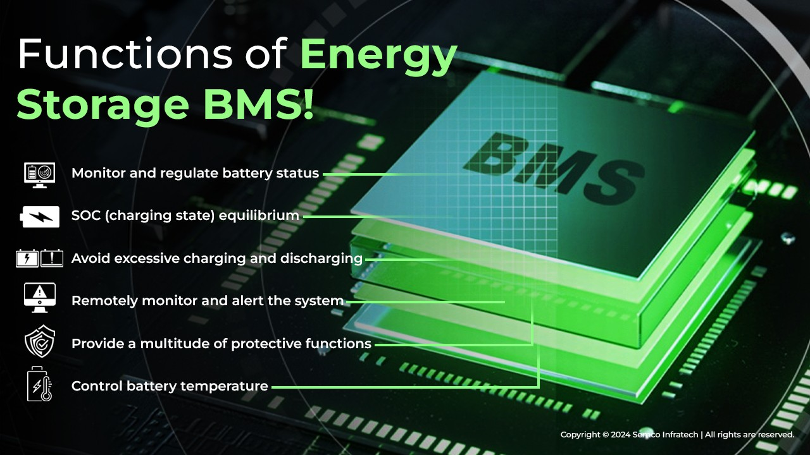
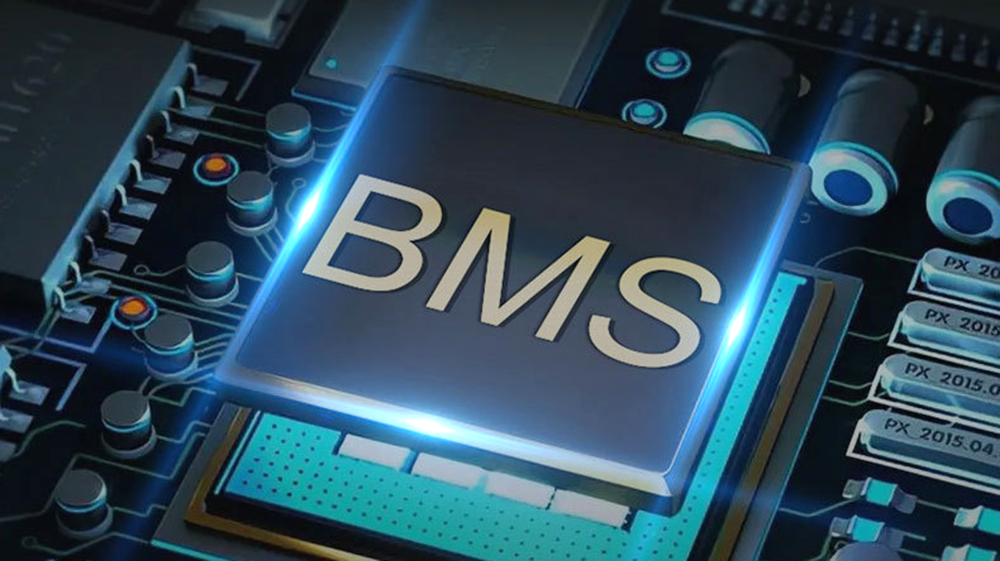

We have earlier talked a lot about electric vehicles and their Battery Management Systems. Currently, the vehicles depend on the grid power supply but as people will buy more and more electric vehicles, the grid will need some help with energy storage infrastructure.
To manage the batteries in energy storage devices a BMS is needed. Today, we will learn about this battery management system in detail.
What is a Battery Management System (BMS?
The Battery Management System or BMS is responsible to intelligently manage each battery unit. It prevents overcharge and discharge. BMS is important to extend battery service life and monitor the battery's state.
Composition of Battery Management System
BMU, current sensor, insulation monitoring, and BCU are crucial components in the power battery system.
BMU, or Battery Management Unit, gathers battery current, voltage, temperature, and related data. It then transmits this information to the BCU for control.
The BCU, or Brake Control Unit, manages the power battery system and interacts with other control units. It receives various data, performs counting, calculation, and analysis, calculates SOC/F/H, controls fan or heating, and communicates with the entire vehicle and charger.
How the Battery Management System Works
The Battery Management System is a system that monitors and manages battery status. Its primary role is to guarantee that the battery operates safely and reliably while also extending its service life. Its functioning principles mostly contain the following four items:
1. Monitoring: The BMS will monitor the battery's status, including voltage, current, and temperature. Monitoring these metrics allows us to better understand the battery's health, performance, and safety.
2. Protection: BMS safeguards the battery against overcharge, over-discharge, short circuit, and other hazards. When the battery's voltage or temperature exceeds the permissible range, BMS will take appropriate precautionary steps to prevent damage or risk to the battery.
3. Equalization: The BMS balances the voltage of various monomers in the battery pack to minimize battery life loss or other issues caused by high voltage differences. This balance helps to keep the battery consistent and extends the battery pack's service life.
4. Communication: The BMS allows for remote monitoring and control of battery management by interacting with the vehicle control system. This connection allows the vehicle management system to better coordinate and control the battery's operational state.
The Main Functions of Energy Storage BMS

- Monitor and regulate battery status: An energy storage BMS may track battery voltage, current, temperature, SOC, SOH, and other parameters, as well as other battery-related data. To do this, it collects battery statistics using instruments like sensors.
- SOC (charging state) equilibrium: During the use of the battery pack, a battery SOC imbalance frequently arises, resulting in a decrease or even failure of the battery pack performance. This problem may be solved by energy storage BMS using battery equalization technology, which controls the discharge and charging of all battery monomers. The equilibrium approach, which may be classified as passive equalization or active equalization, is determined by whether battery energy is wasted or transferred between batteries.
- Avoid excessive charging and discharging: Battery components are susceptible to overcharging and discharging. Too much charging or overcharging will harm battery components. Overcharging or overcharging may degrade the capacity of the battery component, rendering it inoperable. As a result, the energy storage BMS maintains a real-time condition by managing the battery voltage while charging and stopping charging once the battery has reached its full capacity.
- Remotely monitor and alert the system: The energy storage BMS communicates data over a wireless network delivers real-time data to the monitoring end, and sends fault detection and alarm information on a regular basis based on system parameters. Energy Storage BMS also provides versatile reporting and analysis options for generating historical data and event records for batteries and systems, which aid in data monitoring and troubleshooting.
- Provide a multitude of protective functions: The energy storage BMS has a number of protective features that prevent battery short circuits, overcurrents, and other issues, as well as assure safe communication between battery components. At the same time, it can identify and respond to unforeseen events such as unit failure and single-point failure.
- Control battery temperature: Battery temperature is an essential element influencing battery performance and longevity. Energy storage BMS can monitor battery temperature and perform effective temperature management steps to protect the battery from harm caused by excessively high or low temperatures.
Application of Battery Management System in Energy Storage
Energy storage BMS can comprehensively monitor and control the battery energy storage system to ensure its safety, stability, and good performance, so as to achieve the best energy storage effect. In addition, energy storage BMS can also improve the life and reliability of energy storage systems, reduce maintenance costs and operational risks, and provide more flexible and reliable energy storage solutions. Therefore, in the battery energy storage system, energy storage BMS plays a vital role.

The Future Development of Battery Management Systems
- Intelligence: As artificial intelligence technology advances, the future battery management system will become more intelligent, and capable of performing duties such as autonomous diagnostics, optimal management, and intelligent maintenance.
- Modular design: In the future, modular design will be an important trend in battery management systems since it allows for easy modification and extension of the system while meeting the demands of many areas.
- Networking: By integrating with the Internet and the Internet of Things, the future battery management system will provide remote monitoring, data sharing, and early warning features, therefore improving the system's security and dependability.